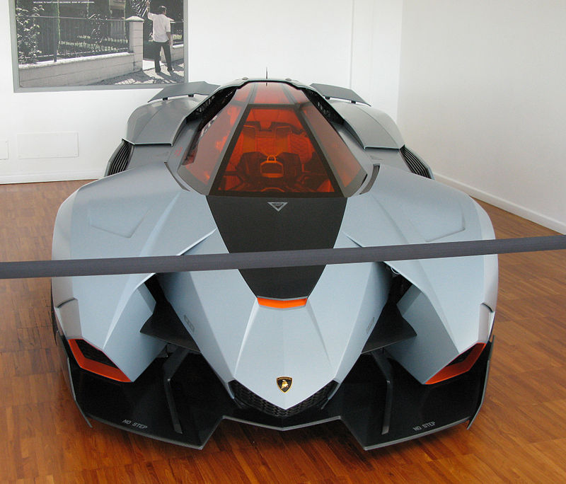
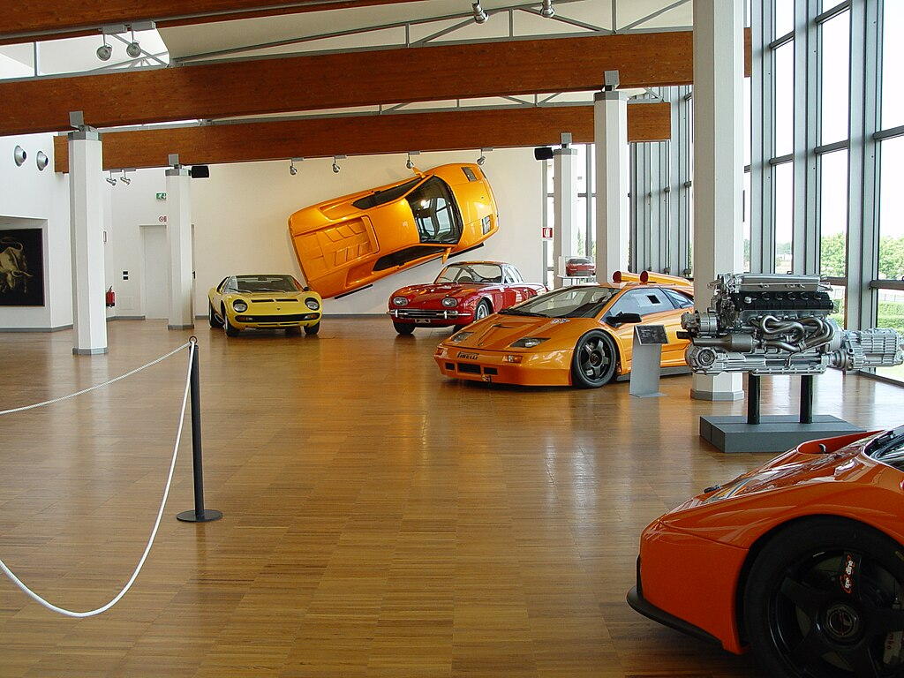
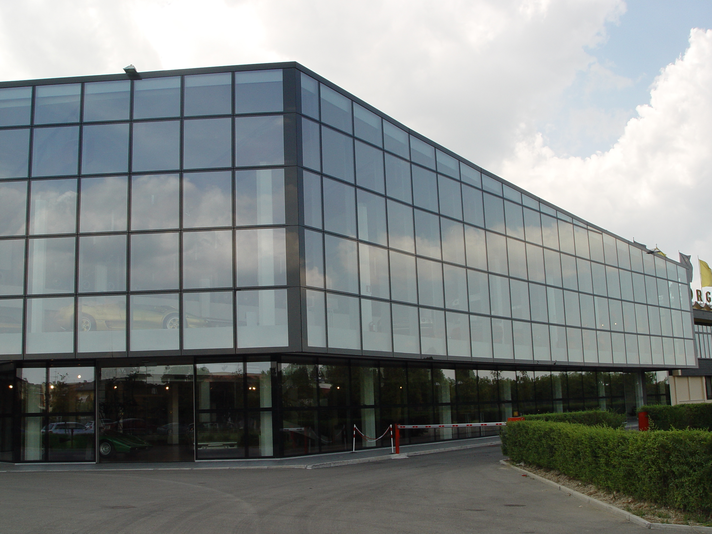

Lamborghini
Lamborghini SpA— is one of the most famous Italian car manufacturers. Its headquarters are in Sant'Agata Bolognese. Apart from expensive and luxury cars, it also manufactures sports cars. The company is owned by the Volkswagen Group through its subsidiary Audi.
Italian manufacturer Ferruccio Lamborghini founded Automobili Ferruccio Lamborghini SpA in 1963 to compete with Ferrari. Lamborghini grew rapidly in its first decade, but sales slumped following the 1973 global financial crisis and the oil crisis. The firm changed ownership three times after 1973, including bankruptcy in 1978. American Chrysler Corporation took control of Lamborghini in 1987 and sold it to Malaysian investment group Mycom Setdco and in 1994 to Indonesian group VPower Corporation. In 1998, Mycom sold Setdco and VPower Lamborghini to the Volkswagen Group
Lamborghini currently produces the V12-powered Aventador and V10-powered Huracán, as well as the twin-turbo V8-powered Urus SUV. The company also manufactures V12 engines for offshore motorboat racing. Founded in 1948 by Ferruccio Lamborghini, Lamborghini Trattori is headquartered in Pieve di Cento, Italy and continues to manufacture tractors.
history
The company was founded by the Italian Ferruccio Lamborghini in 1963 with the aim of producing touring cars that could compete with the offerings of well-known brands such as Ferrari. The company's first models, such as the 350 GT, were released in the mid-1960s. Lamborghini gained notoriety for the 1966 Miura sports coupe, which used a rear-engine, rear-wheel drive layout. Lamborghini grew rapidly in its first ten years, but sales declined following the 1973 global financial crisis and the oil crisis. Ferruccio Lamborghini sold the company to Georges-Henri Rossetti and René Leimer and retired in 1974. The company went bankrupt in 1978 and was dissolved in 1980 by brothers Jean-Claude and Patrick Mimran. The Mimrans bought the company out of receivership. By 1984, he had invested heavily in its expansion. Under Mimrans' management, the Lamborghini model line expanded from the Countach to the Jalpa sports car and the LM002 high-performance SUV. The Mimrans sold Lamborghini to Chrysler Corporation in 1987. Chrysler sold Lamborghini to the Malaysian investment group Mycom Setdco and the Indonesian group VPower Corporation, Mycomco Corporation in 1999. and VPower sold Lamborghini to the Volkswagen Group, where it was controlled by the group's Audi division. New products and model lines were introduced to the brand portfolio and introduced to the market. In the late 2000s, during the global financial crisis and subsequent economic crisis, Lamborghini sales fell by almost 50 percent. In 2021, Lamborghini's CEO said that by 2024, all of its models will be hybrids.
Cars
The 2018 Lamborghini lineup consists of three model lines, two of which are mid-engine two-seater sports cars and the third is a front-engine, all-wheel-drive SUV.
Aventador
The current V12-powered Aventador lineup consists of the LP 740-4 Aventador Ultimate, SVJ coupes and SUVs, with production of all Aventador models said to end in 2022.
.jpg)
Huracan
The V10-powered Huracan lineup now includes the all-wheel-drive LP 610-4 coupe and Spyder, the affordable rear-wheel-drive LP 580-2 coupe and Spyder, and the more powerful track-oriented LP 640-4 Performanté coupe

Urus
Aiming to double sales by 2019, Lamborghini has added the Urus SUV to its lineup, which is powered by a twin-turbo V8 engine and uses a front-engine, all-wheel drive layout.

Marine engines
Motori Marini manufactures a large V12 marine engine block for use in Lamborghini World Offshore Series Class 1 powerboats. The Lamborghini marine engine displaces approximately 8,171 cubic centimeters (8.2 L) and produces approximately 940 horsepower.

Participation in Lamborghini Formula 1 races
Unlike his rival Enzo Ferrari, Ferruccio Lamborghini decided that there would be no factory-supported Lamborghini races, as motorsport was too expensive and a drain on the company's resources. This was unusual for the time, as many sports car manufacturers sought to demonstrate speed, reliability and technical superiority by participating in motorsport. Enzo Ferrari, in particular, was known for using his car business primarily as a source of funding for his involvement in motor racing. Ferruccio's politics created tension between him and his engineers, many of whom were racing enthusiasts, some of whom had previously worked for Ferrari. When Dallara, Stanzani and Wallace began devoting their spare time to developing the P400 prototype, they envisioned it as a road car capable of racing, winning at the track, and being driven by enthusiasts on the road. Group C of the year has developed for the championship season. One car was built, but a lack of sponsorship caused it to miss the season. QVX participated in only one race. Tiff Needell drove in the 1986 championship race at Kyalami, South Africa. Lamborghini was the engine supplier for the Formula 1 season from 1989 to 1993. It supplied engines to Larousse (1989-1990, 1992-1993), Lotus (1990), Ligier (1991), Minardi (1992) and Modena in 1991. The 1992 Larrousse-Lamborghini was largely uncompetitive, but notable for its tendency to exhaust oil. The cars following closely behind Larrousse were usually tan by the end of the race.[12] Lamborghini's best result with the Larousse was at the 1990 Japanese Grand Prix, when Aguri Suzuki finished third on home soil. In late 1991, the Konrad KM-011 Group C sports car used a Lamborghini Formula 1 engine, but the car only lasted a few races before the project was cancelled. Rebadged by Lamborghini's then parent company, Chrysler, the same engine was tested by McLaren at the end of the 1993 season and used in the 1994 season. Although driver Ayrton Senna was reportedly impressed with the engine's performance, McLaren backed out of negotiations, opting for a Peugeot engine instead, and Chrysler completed the project.
Marketing
Brand Identifiers
The world of bullfighting is a core part of Lamborghini's personality. In 1962, Ferruccio Lamborghini visited the Seville farm of Don Eduardo Miura, a famous breeder of Spanish fighting bulls. Lamborghini, Taurus itself, was so impressed with the majestic Miura beast that it decided to adopt the raging bull as its logo for the soon-to-be-opened automaker.
Concept tools
Throughout its history, Lamborghini has presented various concept cars, starting with Lamborghini's first prototype, the 350GTV, in 1963. Other notable models include Berton's 1967 Marzal, 1974 Bravo and 1980 Athon, Chrysler's 1987 Portofino, the 1995 Italdesign-style Cala, and the 1996 Raptor by Zagato. At the 2008 Paris Motor Show, Lamborghini presented the Estoque, a four-door sedan concept. Although there have been many rumors about the final production of the Estoque[16], Lamborghini management has not made a decision on the production of the first four-door to leave the Sant'Agata factory[17][18]. At the 2010 Paris Motor Show, Lamborghini introduced the Sesto Elemento. The concept car is made almost entirely of carbon fiber and is very light, weighing 999 kg. The Sesto Elemento features the same V10 engine found in the Lamborghini Gallardo. At the 2012 Geneva Motor Show, Lamborghini presented the Aventador J, a roofless, mirrorless version of the Lamborghini Aventador. The Aventador J uses the same 700 horsepower engine and seven-speed transmission as the standard Aventador. Lamborghini created the Egoista in celebration of the company's 50th anniversary. Egoista is designed for one person and only one Egoista should be made. At the 2014 Paris Motor Show, Lamborghini presented the Asterion LPI910-4 hybrid concept car. Named after the half-man, half-bull hybrid (Minotaur) of Greek mythology. This is the first hybrid Lamborghini in the history of the company. The Huracan is powered by a 5.2-liter V10 engine that produces 607 horsepower. It takes just over 3 seconds to reach 100 km/h and has a claimed top speed of 298 km/h.

Museums
There are two museums in Bologna, centered around the Emilia-Romagna brand.
Lamborghini museum
Attached to the headquarters, this two-story museum covers the history of Lamborghini automobiles and sports cars, displaying a variety of modern and vintage models. The museum uses displays of cars, engines and photographs to present Lamborghini's history and review milestones.
Ferruccio Lamborghini museum
The 9,000 square meter museum of Ferruccio Lamborghini features several cars, industrial prototypes, sketches, personal items and family photos from Ferruccio's early life
 